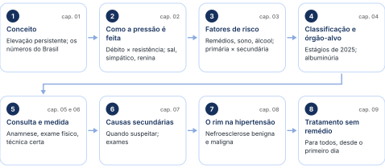
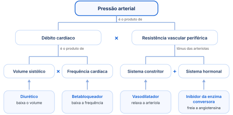
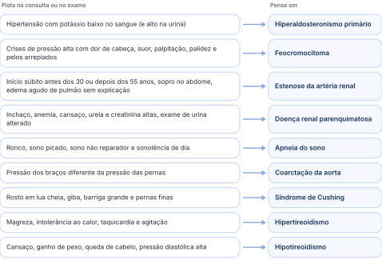
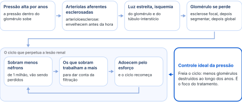
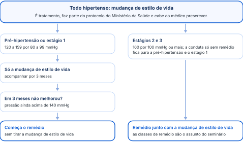

Do sal ao rim: como a pressão sobe, como medir direito, quando procurar uma causa por trás e por que mudar o estilo de vida já é tratamento.
Organizada a partir da aula, com a linguagem ajustada para o estudo. A legenda de cores está na página 2.
Existe um antibiótico de escolha entre as penicilinas e as cefalosporinas? Não existe um só. Há uma gama de antibióticos seguros na gravidez, e cada serviço de Ginecologia e Obstetrícia elege os de sua preferência. A vantagem é que eles existem, porque nem todo remédio pode ser usado pela gestante.

O caminho da aula. No começo de cada capítulo, a faixa "você está aqui" mostra a etapa.
Hipertensão é pressão alta que fica alta: uma subida num dia de nervoso não conta. É comum, está crescendo no Brasil e lesa coração, rim, cérebro e olhos. Controlar a pressão é proteger esses órgãos.
Hipertensão arterial é a elevação persistente da pressão arterial acima dos níveis considerados ótimos. Parece um detalhe frágil, mas é a base para entender a doença: não é uma subida única nem uma situação eventual.
A pressão subiu no dia do falecimento de um parente; passada a situação, voltou ao normal e nunca mais subiu. Isso foi uma eventualidade por estresse, não hipertensão arterial.
Só de olhar a epidemiologia já se enxerga o tratamento: se a doença anda junto com obesidade, sedentarismo e sal, mudar o hábito de vida trata hipertensão.
Acima dos 65 anos, a proporção de hipertensos subiu mais de 5% de 2006 para 2009, e o número de hipertensos aumentou 14% de 2007 a 2017. A mortalidade também cresceu: em 2023 foram 211 óbitos a cada 100 mil habitantes, segundo o boletim epidemiológico do Ministério da Saúde de setembro de 2025. O Dia Nacional de Prevenção e Controle da Hipertensão é 26 de abril, mas quase não se veem campanhas.
O Sistema Único de Saúde entrega todas as classes de remédio para a pressão, e mesmo assim os hipertensos aumentam. O erro não está na prescrição: está em não parar para ensinar que a mudança de hábito de vida faz parte do tratamento.
“Não é falta de remédio. É falta de ensinar o que melhora o controle da pressão além de tomar o remédio.”
Isso importa porque a hipertensão aumenta o risco de doença cardiovascular, tanto isquêmica quanto dilatada, aumenta a chance de doença renal, piora a evolução do diabetes e contribui para o acidente vascular cerebral. Por isso o mundo inteiro fala em controlar a pressão para evitar lesão de órgão-alvo.
A pressão depende de quanto sangue o coração bombeia e de quão fechadas estão as arteríolas. Há sistemas que fecham o vaso e sistemas que abrem; quando a balança pende para o lado que fecha, a pressão sobe. Cada remédio mexe num ponto dessa conta.
A pressão arterial é o produto do débito cardíaco pela resistência vascular periférica. O débito cardíaco é o volume sistólico vezes a frequência cardíaca. A resistência periférica é o tônus das arteríolas, que depende de um sistema constritor e de um sistema hormonal. Onde houver vaso, essa conta está em jogo.

Embaixo, em cada caixa, a classe de remédio que mexe naquele ponto da conta.
Betabloqueador mexe na frequência cardíaca; diurético, no volume; vasodilatador, no sistema constritor; inibidor da enzima conversora da angiotensina, no sistema hormonal. Para saber tratar a pressão, é preciso saber como ela é causada.
“É isso que o médico tem que saber para ser diferente do moço que vende remédio da pressão. Ele conhece de vender remédio, mas não conhece em qual ação o remédio que está vendendo vai trabalhar.”
Se só existisse o sistema que contrai, cada susto (um celular tocando no meio da aula) daria uma crise de pressão alta. Isso não acontece porque há um contraponto, o sistema vasodilatador.
O primeiro sistema vasoconstritor é o excesso de sódio (sal) e de volume. Comer mais sal retém água, aumenta o volume extracelular e eleva a pressão: ativa o sistema nervoso simpático, aumenta o débito cardíaco e aumenta a resposta das arteríolas.
Há pessoas sal-sensíveis, que desencadeiam esse processo mesmo com ingestão normal ou moderada de sal, e pessoas sal-resistentes. Como ninguém traz escrito na testa qual é o seu tipo, a orientação de diminuir o sal vale para todos: é consenso.
O argumento circula nas redes e não se sustenta na fisiologia. O soro fisiológico tem 0,9% de sal, em média 154 mEq (entre 145 e 154); o Ringer e o Ringer com lactato têm menos. Um soro de 1.000 mL leva mais ou menos uma colherzinha de sal diluída em um litro de água. Jogar a mesma colherzinha pura em cima da batata frita é outra coisa: concentração alta e rápida, e a pressão sobe. O soro hidrata, e só depois a pressão pode subir. Sal aumenta a pressão.
Também é vasoconstritor. A hiperatividade dele causa hipertensão por aumentar demais o tônus das artérias periféricas. É o sistema ativado por qualquer estresse: sobe a pressão, acelera o coração, dilata a pupila e contrai as arteríolas.
Ativam a renina a baixa perfusão renal, a redução do volume dentro dos vasos e o aumento do transporte de sódio pela mácula densa. A mácula densa fica mais ou menos em cima do túbulo distal; o néfron segue a ordem glomérulo, túbulo proximal, alça de Henle, túbulo distal e ducto coletor.
Nos livros: o sinal da mácula densa que libera renina é a chegada de menos sódio e cloreto ao túbulo distal.
A aldosterona absorve sódio e água e elimina potássio. Doenças da suprarrenal que ativam a aldosterona deixam o paciente inchado, com pressão alta e perdendo muito potássio.
A bradicinina, principal representante do sistema calicreína-cinina, ativa as células do endotélio a produzir prostaciclina e óxido nítrico. Esse sistema regula a excreção de sódio e inibe a proliferação de células dentro das artérias.
A beterraba tem nitrato, que vira óxido nítrico e dilata os vasos em volta dos músculos; por isso a cápsula ou o suco de beterraba virou moda como pré-treino. É a mesma lógica dos nitratos por via oral na angina e no infarto: dilatar as coronárias. Ninguém vai dar beterraba no infarto.
Os peptídeos natriuréticos (atrial, cerebral e tipo C) agem sobre o sistema renina-angiotensina-aldosterona: inibem a liberação de renina e de aldosterona, antagonizam a angiotensina, aumentam a excreção de sódio e dilatam diretamente o vaso. Em quase todo sistema aparece o sódio, e é por isso que ele pesa tanto na hipertensão.
O sistema das prostaglandinas pode contrair o vaso (o maior representante é o tromboxano) ou dilatar (as prostaciclinas). Nas mulheres com tendência à doença hipertensiva da gravidez, ele está mais ativado: parece haver excesso de tromboxano em relação à prostaciclina.
O anti-inflamatório não ativa nada: ele inibe o sistema das prostaglandinas. Por isso retém sódio e água, incha e pode subir a pressão.
Algumas causas de pressão alta não mudam (genética, idade, sexo, etnia); outras dependem do dia a dia (sal, peso, álcool, cigarro, sono, remédios). E há dois tipos: a primária, que é a maioria, e a secundária, que tem uma causa por trás e às vezes tem cura.
O álcool gera hipertensão acima de 30 mL por dia, o que corresponde a dois copos de cerveja ou de vinho, ou a duas doses de destilado (os limites estão no capítulo 09). Já a covid-19 não parece causar hipertensão: ainda se estuda, mas os resultados preliminares não mostraram relação de causa e efeito.
Pode tomar: tem pouco sódio e ninguém incha por uma lata. Mas é a de 350 mL, não a garrafa de 2 litros, que multiplica o sódio por seis. O problema é outro: o ácido fosfórico vira fosfato e aumenta a chance de cálculo de fosfato de cálcio. Do sódio ela foi redimida; do ácido fosfórico, não.
Num paciente sabidamente hipertenso, anti-inflamatório e corticoide pedem muito cuidado: podem deixá-lo mais hipertenso e mais inchado. No corticoide prolongado, medir a pressão duas vezes por semana; se ela subir ou o paciente reter sódio e água, aumentar o anti-hipertensivo. É rotina do ambulatório.
Diga que o remédio pode subir a pressão e causar inchaço, e que isso é sinal de alerta para procurar um pronto-atendimento e ajustar a dose. Atendido numa quinta-feira véspera de feriado, ele passaria sexta, sábado e domingo sem controle nenhum e poderia ter uma crise hipertensiva.
“É obrigação do médico explicar efeito colateral.”
Não precisa bater o martelo em 8 horas: 6 horas de sono de qualidade estão muito bem, e cada um tem seu padrão (há quem durma 4 horas e acorde bem e quem precise de 12). O que importa é o sono ser profundo e de qualidade. Quem não descansa e não chega ao sono REM fica com o sistema nervoso simpático mais ativo, e o simpático contrai os vasos.
Por isso o sono de qualidade hoje é visto como tratamento da pressão: estimular, de preferência sem remédio, com psicoterapia estimuladora do sono; medicação só se não houver resposta.
“Sono de qualidade é igual a pressão arterial de qualidade.”
A hipertensão primária responde por 90% a 95% dos casos, mas só pode ser chamada de primária depois de excluídas as causas secundárias. O motivo: muitas causas secundárias são tratáveis a ponto de o paciente ficar sem hipertensão.
O que é comum na hipertensão primária:
A pressão é classificada em faixas, de normal a estágio 3. Em todo hipertenso é obrigatório procurar lesão em quatro lugares: coração, grandes vasos, rim e retina. No rim, o primeiro sinal é a albumina escapando na urina.
A classificação mudou em 2025 no mundo inteiro, e as sociedades brasileiras de cardiologia e de hipertensão a adaptaram para o Brasil. É a que se usa hoje (valores em mmHg):
Também mudou em 2025 o que conta como hipertensão com lesão de órgão-alvo. Avaliar isso é obrigatório em todo hipertenso: ao discutir o caso com alguém, a primeira pergunta será "tem lesão de órgão-alvo?". O foco fica em quatro órgãos.
Alterações no eletrocardiograma ou no ecocardiograma.
Índice tornozelo-braquial alterado ou ultrassom de carótida alterado.
Taxa de filtração glomerular alterada ou albuminúria.
Alteração no fundo de olho.
Para a cardiologia e a nefrologia, o foco é a presença ou não de microalbuminúria. Ela significa perda da estrutura do glomérulo: os podócitos, células com "pezinhos" que ficam encostados uns nos outros, se afastam. Com essa separação podocitária, a albumina passa para a urina. Quanto mais grave e mais longa a hipertensão, mais fácil a albumina passa.
“Ele é o meu podócito e eu sou uma podócita. Nós temos que ficar com um pé colado no outro.”
A albuminúria é um senhor marcador de gravidade, tanto para o rim quanto para o coração e os vasos: quanto mais alta, mais grave a lesão de órgão-alvo.
No Brasil, a albuminúria vem em miligrama por grama (mg/g) de creatinina. Não usem milimol: o laboratório não vai dar nessa unidade.
Nos livros: a relação em mg/mmol é a do sistema internacional de unidades, usada em países como o Reino Unido; nos Estados Unidos, como no Brasil, os laboratórios usam mg/g.
Na consulta, cada pergunta tem um objetivo: a família, a comida, a adesão ao remédio. O exame físico procura lesão de órgão-alvo e sinais de uma doença por trás da pressão alta.
Anotar sexo, idade, cor da pele, profissão, condição socioeconômica, se já sabia ser hipertenso e se já tem doença de órgão-alvo (doença coronariana, insuficiência cardíaca, doença vascular). Mais do que perguntar, é saber o objetivo de cada pergunta: história familiar, hábitos alimentares e adesão ao tratamento.
— O senhor usa muito sal na comida?
— Não, minha mulher não põe sal. A gente come só tempero da horta.
— Que bom. E como ela cozinha?
— Ela faz o arroz e, em vez de água, põe caldo pronto.
Caldo pronto é riquíssimo em sódio. Pergunte como a comida é feita, e não só se leva sal.
Outras fontes de sódio escondido para investigar: temperos prontos, macarrão instantâneo com o pozinho, shoyu e comidas congeladas de comer fácil (é só tirar do freezer e pôr no micro-ondas), como pizzas prontas, que usam fosfato de sódio como estabilizante e são ricas em fosfato e em sódio. A máxima das nutricionistas resume a conduta: não desembalar, e sim descascar. Ou seja, não abra o que vem pronto; descasque o que é natural.
Obter medidas repetidas e acuradas da pressão nos dois braços. Uma medida única não diz se alguém é hipertenso: muita gente sobe a pressão só de chegar ao consultório, a hipertensão do avental branco. E não é só o avental do médico: pode ser o da enfermeira ou o do técnico de enfermagem. É o medo do que vai ouvir e de ter que mudar alguma coisa na vida.
Anamnese e exame físico completos; comorbidades (diabetes, dislipidemia, doença renal); história familiar e risco cardiovascular; exames complementares (capítulo 07); medidas acuradas da pressão; e, principalmente, pesquisa de lesão de órgão-alvo: rins, retina, coração e cérebro.
O manguito fecha a artéria; ao soltar, escuta-se o sangue voltando. O primeiro som é a pressão máxima e o sumiço do som é a mínima. Detalhes como café, bexiga cheia, conversa e manga dobrada mudam o número.
Amontoar a roupa no alto do braço muda o diâmetro dele, e a pressão sai mais alta. Se o paciente não quiser tirar a blusa, peça para tirar só a manga: o braço tem que estar livre.
No paciente em hemodiálise com fístula arteriovenosa, nunca medir a pressão no braço da fístula: medir no outro braço e numa das pernas. O motivo vem do próprio método. O manguito colaba a artéria para que depois ela volte a funcionar, mas a fístula pode não voltar: ou a sutura abre, ou o sangue coagula lá dentro e ela para de funcionar.
Ao insuflar o manguito com a pera, a artéria fecha e o sangue não passa. Ao soltar, ele volta a circular: o primeiro som (fase I de Korotkoff) marca a pressão sistólica, a máxima. Os sons continuam até desaparecer; o desaparecimento do som (fase V) marca a pressão diastólica. Depois do primeiro som, a deflação pode ser um pouco mais rápida.
A sistólica pode ser percebida com a mão na artéria (método palpatório), porque o pulso volta a bater. A diastólica não: o som para na ausculta, mas o pulso continua batendo na mão. Se vir alguém medindo a diastólica sem estetoscópio, saiba que não é o método correto. Diastólica só com estetoscópio.
“O som para na ausculta, mas não para de bater na tua mão! A artéria continua pulsando, senão o paciente morreu!”
Complemento: fora da aula. Hipertensão mascarada é o contrário do avental branco: pressão normal no consultório e alta fora dele.
Além da medida comum, três métodos ajudam na dúvida. A monitorização ambulatorial da pressão arterial (o exame chamado MAPA) é a mais usada; a monitorização residencial (MRPA) é muito parecida com ela; e a automedida da pressão arterial (AMPA) usa o aparelho do próprio paciente.
Hipertensão secundária tem uma causa por trás: um rim doente, uma artéria do rim estreitada, um tumor da suprarrenal, a tireoide, a apneia do sono. Achar a causa pode curar a pressão alta, por isso ela é procurada antes de se falar em hipertensão primária.
Faça disso conduta: auscultar sempre a região mediana do abdome. Sopro abdominal é sinal de aneurisma de aorta, de aneurisma das artérias renais ou de estenose de artéria renal, e isso precisa ficar guardado na cabeça.
A mulher que volta ao pronto-socorro inúmeras vezes, ansiosa, com mal-estar, dor no peito, palpitação e pelos arrepiados, e de quem todos dizem "está aqui de novo", pode ter um feocromocitoma. Nem toda crise de ansiedade é crise de ansiedade: pode ser uma doença com tratamento, e precisa ser investigada como causa de hipertensão.
“Nunca tachem uma mulher de piti ou de ansiosa sem vocês terem certeza de que ela não tem um feocromocitoma. Observem, cuidem, protejam.”

Cada pista e a causa secundária em que ela faz pensar.
Paciente de 45 a 50 anos chega ao pronto-atendimento em edema agudo de pulmão súbito: não fuma, não está inchado, não tem doença cardiovascular. Trate o edema, claro, mas interprete o quadro e investigue estenose de artéria renal.
Quando dá para dosar, a aldosterona no sangue costuma vir acima deste valor.
Como a primária só se confirma depois de excluir a secundária, a avaliação de laboratório pede:
Se a suspeita for de feocromocitoma, pedir catecolaminas no sangue e também a dosagem de renina e de aldosterona no sangue. Hoje são exames tranquilos, feitos pela maioria dos laboratórios, inclusive o municipal: dá para conseguir na rede pública.
Anos de pressão alta envelhecem antes da hora as arteríolas que levam sangue ao glomérulo. Os glomérulos vão se perdendo, os que sobram trabalham dobrado e adoecem também. Na forma maligna, uma crise grave fecha as arteríolas, e é emergência.
A hipertensão lesa principalmente as arteríolas aferentes, que se esclerosam (arterioloesclerose): a pressão dentro do glomérulo aumenta e tudo o que chega de sangue ao rim vai sendo esclerosado. O dano é o mesmo do envelhecimento normal, só que precoce. A luz das arteríolas estreita e o glomérulo fica isquêmico. A lesão é pior em negros e asiáticos e pode ser benigna ou maligna.
Começa como glomeruloesclerose focal: pequenas partes do glomérulo envelhecem, as paredes das arteríolas enrijecem e aquela parte deixa de funcionar. Com os anos de hipertensão, a lesão passa a segmentar, atinge mais de um espaço e acaba tomando o glomérulo inteiro (global). A esclerose das arteríolas causa isquemia crônica do parênquima renal: dos glomérulos e do túbulo-interstício.
Nos livros: focal é a lesão que atinge alguns glomérulos; segmentar, a que atinge parte de um glomérulo; global, a que toma o glomérulo inteiro.
Temos cerca de 1 milhão de néfrons, e cada néfron é um glomérulo mais os túbulos. Com o tempo de hipertensão, eles vão sendo destruídos. Os que sobram ficam sobrecarregados para dar conta da filtração, e esse esforço tem limite: adoecem também, e é isso que perpetua a lesão renal.
É como trabalho em grupo: se um não faz a sua parte, os outros da equipe têm que trabalhar mais. Um glomérulo isquêmico, que não recebe sangue a contento, joga o serviço para os vizinhos, até que eles também cansem.

Em cima, como a pressão alta destrói o glomérulo; embaixo, o ciclo dos néfrons que sobram.
Que menos glomérulos sejam destruídos ao longo do tempo, deixando a destruição o mais lenta possível. O cuidado é o controle ideal da pressão. Hoje há, além dos tiazídicos e dos inibidores da enzima conversora da angiotensina, um conjunto grande de remédios; quais protegem melhor o rim é assunto do seminário.
Aparece na hipertensão muito grave, estágio 3 com pressão diastólica acima de 120 mmHg, no paciente em surto hipertensivo grave. As arteríolas do glomérulo ficam completamente obstruídas. O paciente desenvolve insuficiência renal progressiva, proteinúria e retinopatia, por isso olhar o fundo de olho é importante. Na parede do vaso aparece necrose fibrinoide ou lesão em bulbo de cebola. Por fora, o rim fica com várias áreas de necrose, como se tivesse sido mordido por várias pulguinhas. A nefroesclerose maligna é uma emergência hipertensiva.
Com pressão acima de 180 por 120 mmHg, a pressão não deve ser abaixada rapidamente: a queda tem que ser gradativa. Baixar rápido pode romper arteríolas, causar acidente vascular cerebral ou lesão grave da retina.
Sem controle da pressão, a insuficiência renal piora. Controlar a pressão na nefroesclerose maligna evita a perda da função renal.
Receitar remédio para pressão todo mundo sabe. O que diferencia o médico é tratar com mudança de estilo de vida: perder peso, cortar sal, mexer o corpo, dormir bem, beber pouco, parar de fumar. Vale para todo hipertenso, e na pressão mais leve pode ser o único tratamento por três meses.
“A gente está errando quando acha que tratamento não farmacológico, mudança de estilo de vida, não tem importância. E tem.”
Se só remédio resolvesse, a hipertensão não seria causa tão importante de lesão de órgão-alvo. A própria indústria farmacêutica olhou para isso: as canetas emagrecedoras ganharam importância médica porque tratam as doenças que mais causam complicações crônicas, a hipertensão e o diabetes. Emagrecer deixou de ser estética e virou saúde.
Perder 10 kg baixa a pressão em 10 mmHg: o bastante para passar do estágio 2 ao 1, ou do estágio 1 à pressão normal.
Mantido abaixo de 25, reduz em 40% a hipertensão em mulheres.
Diminuir o sódio e aumentar o potássio da dieta. O americano come, em média, 12 g de sal por dia.
Nos livros: a meta das diretrizes é de até 2 g de sódio por dia, o equivalente a cerca de 5 g de sal de cozinha.
É preciso aprender a ler rótulo. Um levantamento de 2012, que continua valendo, mostra o sódio de alimentos do dia a dia:
Até o que parece doce tem sódio: o biscoito recheado tem quase 300 mg, e os bolinhos prontos do lanche das crianças têm uma quantidade absurda. Sucos prontos, suco de soja e pão de forma também. Uma boa atividade é ir ao supermercado olhar os rótulos: a quantidade de sódio por embalagem surpreende.
Uma lata por dia está liberada: tem pouco sódio. O defeito dela é o ácido fosfórico, que piora o cálculo renal. Mas a coquinha junto com pão francês e maionese passa de boa para ruim: "diga-me com quem andas e te direi quem és".
Regular, segundo a Organização Mundial da Saúde (2024).
O sedentário que nunca caminhou e sai andando 30 minutos no primeiro dia terá uma dor muscular absurda no segundo, vai falar mal do médico e não volta a caminhar. Comece com menos tempo e aumente aos poucos até chegar aos 30 minutos.
A mulher se alcooliza mais facilmente do que o homem, por isso o limite dela é menor.
Parar de fumar: a nicotina contrai os vasos, e quem fuma tende a ter a pressão mais alta. Dormir bem: não é só o tempo, é a qualidade; quanto melhor o sono, menor a chance de pressão alta.
Nos livros: o anti-inflamatório tira as prostaglandinas que mantêm aberta a arteríola aferente; chega menos sangue ao glomérulo e o rim retém sódio e água.
A dieta DASH (sigla em inglês para "abordagens alimentares para parar a hipertensão") é uma prima americana da dieta mediterrânea: pobre em sal, rica em frutas, verduras, minerais e laticínios, com pouca gordura. Diminui em 14% o risco de hipertensão.
Existem temperos prontos no estilo da dieta DASH, em vidrinhos de tampa colorida: misturas de temperos secos, como pimenta-calabresa, manjerona, manjericão, alho e cebola desidratados. Hoje se acham no país vizinho. O único alimento intragável sem sal é a carne, que pede um pouquinho; o resto se tempera com tempero seco.
Reduz a pressão, mas leva a falta de ferro e de vitamina B12: precisa de acompanhamento de nutricionista ou nutrólogo.
Acima de 60% de cacau, 30 g por dia: reduz a pressão por ser rico em polifenóis.
O tratamento hoje é centrado na pessoa: exercício físico, alimentação saudável, tempo de sono, controle do álcool, conexão social e controle do peso. A novidade da diretriz brasileira de 2025 é a abordagem da espiritualidade e da religiosidade, que as diretrizes nunca tinham assumido: meditação, respiração lenta e prática espiritual passam a contar como mudança de hábito de vida na hipertensão.
Para absolutamente todos os hipertensos. Faz parte do Protocolo Clínico e Diretrizes Terapêuticas da hipertensão do Ministério da Saúde, e conhecê-lo é obrigação do médico. Na pré-hipertensão e no estágio 1, pode ser o único tratamento orientado: se em três meses não houver melhora, com a pressão ainda acima de 140 mmHg, começa o remédio. Mas todos seguem com a mudança de estilo de vida.

Quando entra o remédio. A mudança de estilo de vida nunca sai.
“Tratamento não farmacológico cabe ao médico fazer. Isso é procedimento médico.”
Os pontos PROVA e os números da aula, na ordem da trilha.
Hipertensão é elevação persistente da pressão. Uma subida isolada, por estresse, não é hipertensão. Cerca de 32% no mundo; estimativa de 40 milhões no Brasil em 2024.
Pressão = débito cardíaco × resistência periférica; débito = volume sistólico × frequência. Betabloqueador frequência; diurético volume; vasodilatador sistema constritor; inibidor da enzima conversora sistema hormonal.
Fecham o vaso: sódio e volume (sal aumenta a pressão; cortar vale para todos; o soro é sal diluído), simpático, renina-angiotensina-aldosterona. Abrem: calicreína-cinina (óxido nítrico) e peptídeos natriuréticos. Prostaglandinas dos dois lados; o anti-inflamatório as inibe e retém sódio e água.
Corticoide e anti-inflamatório no hipertenso: medir a pressão duas vezes por semana, aumentar o remédio se subir e avisar o paciente do efeito colateral (obrigação do médico).
Primária: 90% a 95% dos casos, mas só depois de excluir as secundárias, que podem ter cura.
Classificação de 2025: normal menor que 120/80; pré-hipertensão 120 a 139/80 a 89; estágio 1, 140 a 159/90 a 99; estágio 2, 160 a 179/100 a 109; estágio 3, 180/110 ou mais.
Lesão de órgão-alvo é obrigatória: coração, grandes vasos, rim e retina. Albuminúria em mg/g, nunca em milimol: A1, normal, abaixo de 30; A2, moderada, de 30 a 300; A3, alta, acima de 300.
Anamnese: pergunte como a comida é feita, não só se leva sal (caldo e tempero prontos, macarrão instantâneo, shoyu, congelados). Exame físico obrigatório: peso, altura, índice de massa corporal, frequência cardíaca, ausculta, fundo de olho e pressão repetida nos dois braços.
Medida: 30 minutos sem café, cigarro ou exercício; bexiga vazia; sentado, costas apoiadas, quieto e com o braço livre de roupa; manguito certo; diastólica só com estetoscópio; nunca no braço da fístula. Avental branco: monitorização ambulatorial de 24 horas, o melhor método.
Pense em secundária antes dos 30 ou depois dos 50 anos, no estágio 3 de início, na tríade do feocromocitoma (nunca chame de ansiosa sem investigar), no potássio baixo, no sopro abdominal (aneurisma de aorta ou das renais, estenose de artéria renal) e no edema agudo de pulmão súbito.
As causas para gravar: doença renal parenquimatosa, a principal; estenose de artéria renal; doença hipertensiva da gravidez; feocromocitoma (0,1% a 0,5%; dosar metanefrina); hipertireoidismo; hiperaldosteronismo primário (retém sódio e água e elimina potássio: potássio baixo; aldosterona acima de 15 ng/dL).
Nefroesclerose benigna: focal, segmentar, global; os néfrons que sobram se sobrecarregam e adoecem. Maligna: diastólica acima de 120, emergência; baixar a pressão devagar.
Mudança de estilo de vida para todos e cabe ao médico. Só ela por 3 meses na pré-hipertensão e no estágio 1; remédio se seguir acima de 140. Cada quilo perdido, 1 mmHg a menos; sódio 2 g por dia; exercício aeróbico 5 vezes por semana, 30 minutos; álcool até 2 doses por dia no homem e 1 na mulher. Novidade de 2025: espiritualidade e religiosidade.